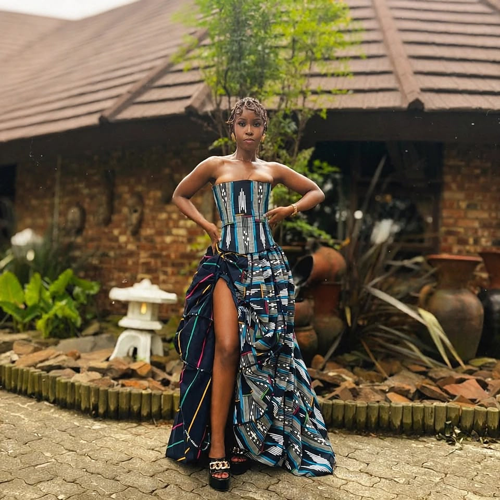

measure
Every measurement taken by hand, then taken again. The fit starts here.
Made by hand
South Africa
Scroll
Who we are
Every corset begins with a conversation. MS measures, cuts and sews each piece by hand, shaping fabric into structure that holds you as if it was always yours. No two bodies are the same, so no two corsets are either.
The craft
Every measurement taken by hand, then taken again. The fit starts here.
A pattern drawn for one person only, cut from fabric chosen together.
Boned, lined and finished stitch by stitch, until it holds its shape on its own.
In numbers
Every piece is cut to one person's measurements.
Measured, cut, boned and finished by hand.
Fittings, on average, before a corset is ready.
Every booking gets a reply within 48 hours.

“a corset should hold you the way a good friend does: firmly, and never too tight.”
MS, founder
The fabrics
The fabric, the thread and the finish are chosen with you, then worked by hand until the detail is right. Every piece is lined so it feels as good as it looks.
How it works
Drag →
We talk about the occasion, the fabric and the shape you have in mind.
A full set of measurements, so the pattern is drawn for you and nobody else.
The corset is tried, adjusted and tried again until it sits exactly right.
The finishing touches, a final fitting, and it is yours to wear.